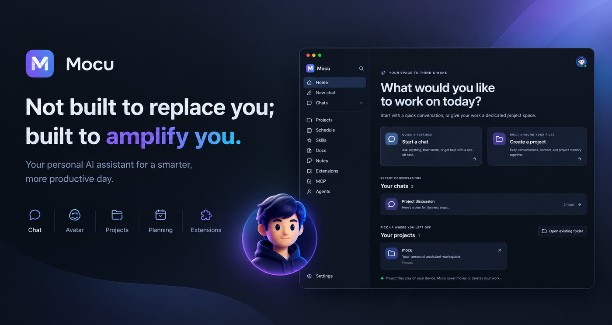

Agents
Who does the work
Specialists with a role, a working style, their own tools, skills, model and sub-agents. Saved, reusable, and editable in plain language.
Open source · Alpha · Windows
Mocu is a desktop workspace where you build personal AI agents, hand them your real tools and knowledge, and keep working with them on the same project for months — instead of re-explaining yourself in a new chat window every morning.
Free and open source (Apache 2.0). Bring your own model provider and API keys — model usage is billed by your provider.

A general assistant starts every conversation knowing nothing about your job. It does not know your editorial rules, your product's latest changes, or how your team reviews work — so you repeat all of it, every single time.
Mocu is built the other way around. Your methods live in skills. Your facts live in documents. Your specialists live in agents. Your history lives in project memory. The more you use it, the less you repeat.
Each one is useful on its own. Together they are the reason a task gets cheaper the second time you run it.
Who does the work
Specialists with a role, a working style, their own tools, skills, model and sub-agents. Saved, reusable, and editable in plain language.
How the work is done
Reusable instructions and methods. Write your process once and every agent that loads the skill follows it the same way.
What the system can do
New tools and integrations, running as Node.js or Python programs, including MCP servers and full in-app apps with their own interface.
What it already knows
Project memory for decisions and preferences, knowledge documents for reference material, notes for intentions — all retrieved by relevance, not pasted in bulk.
You describe the team; Mocu creates it.
“Create a research agent that uses my reference documents, a writing agent that follows my style, and a reviewer that checks the result. Let the writing agent delegate research and review to the other two.”
Define each agent's role, working style and the exact tools it may use.
Connect specialists into a system where one agent hands work to another.
Automate a recurring job daily, weekly or monthly, with the input you choose.
Mocu ships with ready-made agents for the roles people repeat most — browsing, coding, computer control, research and reading. Or start from a blank one and describe your own.
Mocu is an alpha. Browser and desktop automation are experimental; review what agents do and be ready to take over. Capability and quality depend on the provider and model you configure.
The roadmap is public. Directions are labeled honestly: shipped, in progress, or still a research question.
Project memory, project history, computer control alpha, browser bridge, image and video generation, interactive previews, notifications.
Reliability for browser and desktop automation, a dependable MCP path, and a growing catalog of in-app apps.
A world model for agents: learn from what an agent actually did, predict the outcome before acting, and use that to improve cheap models.
Yes — Apache 2.0, free to download. Model and API usage is billed by whichever provider you configure, so running agents can cost you depending on your provider and model choices.
The app, your projects, notes, documents and memory live locally on your machine. Model calls go to the provider you choose, so responses need a network connection unless you point it at a local model endpoint.
A general assistant starts with no knowledge of your work, so you re-explain context every time. Mocu stores your methods in skills, your facts in documents, your specialists as agents and your history in project memory. The setup accumulates instead of resetting.
Through optional extensions, yes. Browser Use drives a real browser session; Computer Control can open apps, screenshot windows, move the mouse and type. Both are alpha, so supervise actions and be ready to take over.
No. Describe the agent, skill or extension you want in plain language and Mocu creates it. Developers can build extensions directly with the bundled Node.js and Python SDKs.
Windows installers are published for the alpha. The app is built with Tauri, so macOS and Linux builds are possible from source, but Windows is the tested path.
In your own project folders and in the app's local data directory on your machine — memory files under .mocu/ inside each project. Nothing is uploaded to a Mocu server. See the privacy policy.
Download it, describe one specialist, and let it take the repetitive part of your week.